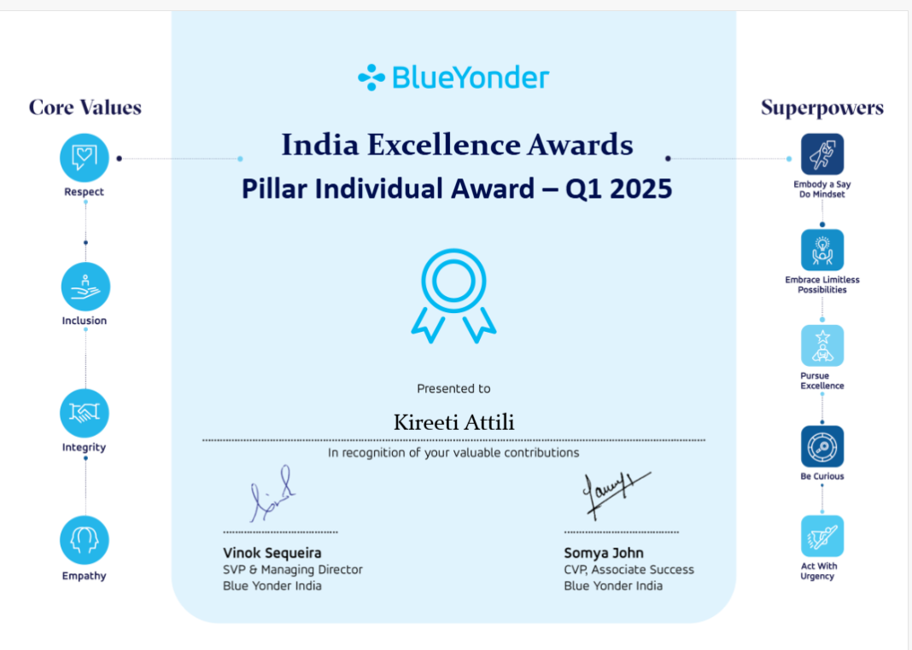

M.S. Computer Science @ NC State · Software engineer with 2+ years of experience building production software across backend services, distributed systems, platform infrastructure, data pipelines, and full-stack applications at Blue Yonder. I enjoy solving systems problems across the stack — from networking and operating-systems fundamentals to scalable services, infrastructure, and intelligent software.
Jul 2024 – Aug 2026 · Bengaluru, India
RCA (Root Cause Analysis) helps warehouse teams investigate operational problems such as late shipments, short orders, and order lead-time issues by surfacing likely underlying causes from warehouse data.
Owned the RCA sub-agent end-to-end within an enterprise warehouse-operations platform, integrating Python, FastAPI, Snowflake, Kafka, MongoDB, Azure Blob Storage, and LangChain.
Designed the pipeline supporting 40+ scheduled jobs running every 30–60 minutes, with Kafka producers and consumers coordinating Snowflake queries, RCA computation, and persisted results for low-latency retrieval.
Parallelized RCA and AI brief-generation workloads with Python multithreading, reducing scheduled-job execution time by more than 50%. Migrated precomputed RCA results from Azure Blob Storage to MongoDB to improve retrieval performance.
Built internal APIs and automated Kafka topic provisioning for enterprise platform services, along with Kafka-based test infrastructure for consuming and validating application lifecycle and status events.
Developed React/TypeScript workflow-editor functionality including control connectors, parallel branches, nested actions, and reusable components. Built a configurable slot-based UI extension system used to inject custom UI components through configuration.
Contributed to product integration and customer-facing demonstrations, helping turn RCA workflows into a practical warehouse-operations capability.
Jan 2024 – Jun 2024 · Bengaluru, India
Built Spring Boot microservices and Java APIs, contributed to React/Node.js applications, and worked across testing, CI/CD, and warehouse-management-system product development.
Jun 2023 – Aug 2023
Worked on field-service-management software, building geospatial integrations and mapping utilities with ESRI, Google Maps, and OL3 for route, geofencing, multi-map, and technician workflows.
Recognized as one of 18 recipients across Blue Yonder's India Product Development organization during my first year at the company.

Recreated Kafka Producer, Consumer, Broker, and Zookeeper modules using Python sockets with a custom messaging protocol and concurrent multi-producer/multi-consumer operation.
Built a recommendation system from player game histories to identify tactical weaknesses; presented at ICCIIS 2024.
Master of Computer Science · Expected May 2028
B.Tech, Computer Science · GPA 8.38/10 · May 2024
I'm pursuing my M.S. in Computer Science at NC State and looking for software engineering opportunities across systems, backend, distributed systems, computer networks, operating systems, platform/infrastructure, full-stack, and intelligent software.